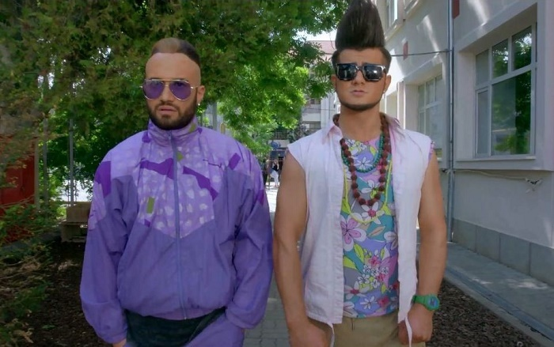

Mașinile noastre combină designul futurist cu tehnologia de ultimă generație. Fiecare model este construit pentru a oferi o experiență de condus excepțională.Afla mai multe

Cum a inceput totul?
De mici copii fondatorii nostri Robert Manea si Ana Cameliu Ionut au fost innebuniti de masini, pasiune ce a legat o prietenie ce tine pana in ziua de azi. Tot acesta pasiune a dus la deschiderea magazinului nostru legendar!
Kazuhiko „Smokey” Nagata, fondatorul atelierului Top Secret, a transformat un Toyota Supra într-un monstru de viteză. Într-o versiune faimoasă, a înlocuit motorul original 2JZ cu un V12 de 5.0 litri (1GZ-FE) de la Toyota Century, modificat cu două turbocompresoare HKS pentru a produce peste 1000 CP. Cu această mașină, Smokey a atins 222 mph (357 km/h) pe pista Nardo din Italia și a fost implicat într-o cursă ilegală pe o autostradă britanică, unde a fost arestat după ce a depășit 300 km/h.
Această mașină iconică a fost un GT-R V-Spec importat legal în SUA de MotoRex, una dintre puținele unități federalizate. Universal Studios a închiriat mașina de la Craig Lieberman, fostul director tehnic al francizei, și a modificat-o pentru film: a fost vopsită argintiu cu dungi albastre, echipată cu spoiler, jante aftermarket și kit de caroserie agresiv. Sub capotă, Skyline-ul avea un motor RB26DETT de 2.6 litri twin-turbo, cu tracțiune integrală ATTESA și direcție pe patru roți HICAS. Modificările includ:
Mercedes-Benz C124 Brabus din 1987 este o versiune rară și modificată a coupe-ului 300 CE, transformată de tunerul german Brabus într-o mașină de performanță discretă, dar sofisticată. Acest model se bazează pe seria W124, mai exact pe varianta coupe C124, și a fost personalizat de Brabus cu un motor 3.6 litri inline-six aspirat natural, derivat din motorul original de 3.0 litri. Puterea a fost crescută semnificativ, iar transmisia manuală în 5 trepte păstrează caracterul sportiv al mașinii